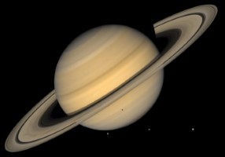

| Venus | Moon | Earth | Saturn | |
|---|---|---|---|---|
| Images of Planets |  | |||
| Fact #1 | A day on Venus is longer than a year | The moon probably formed in a giant collision | Earth is approximately 4.54 billion years old | Saturn takes about 29.5 Earth years to complete one orbit around the Sun |
| Fact #2 | Venus has 90 times the atmospheric pressure of Earth | The moon's phases depend on its position | Seasons are Due to Earth’s Tilt | Saturn has the lowest density of any planet in the Solar System |
| Fact #3 | Venus spins clockwise on its axis | There is water on the Moon | Earth has a magnetic field generated by movements of molten iron in its outer core | Saturn has 145 known moons and moonlets, with Titan being the largest |
| Fact #4 | Venus is hotter than Mercury – despite being further away from the Sun | The Moon makes the Earth move as well as the tides | Earth is Not a Perfect Sphere | Saturn has the second shortest day in the Solar System, completing one rotation on its axis in about 10.7 hours |
| Fact #5 | Venus is the second brightest natural object in the night sky after the Moon | The Moon was made when a rock smashed into Earth | The Earth's Inner Core is as Hot as the Sun’s Surface | Like Jupiter, Saturn is a gas giant, composed mainly of hydrogen |
| Fact #6 | Venus spins the opposite direction of Earth and most other planets | Temperatures on the Moon range from about -173°C at night to 127°C during the day | Earth’s Atmosphere Protects Life | Saturn’s iconic rings are made up of ice, rock, and dust |
| Fact #7 | Venus has an active surface, including volcanoes! | The Moon has almost no atmosphere, meaning there’s no air, weather, or protection from cosmic radiation | 70% of Earth’s Surface is Water | Saturn is the second-largest planet in the Solar System |